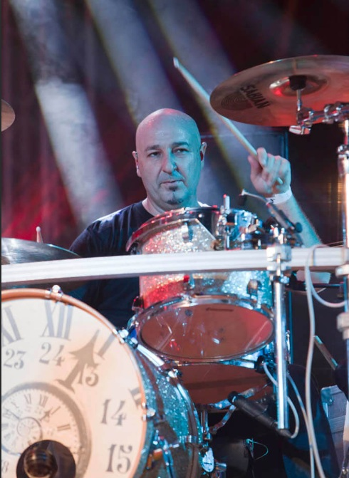

Mariano Montero
Batería · 1994–2018
El pulso que sostiene todo
Mariano Montero es el tipo de batería que no necesita llamar la atención para que se le note. Desde su llegada a la banda en 1994, se convirtió en el pulso constante sobre el que se construyó el sonido más sólido y reconocible de Rosendo.
Su forma de tocar es directa y honesta: golpes secos, tempos firmes y una sensación permanente de control que permite que la música avance sin titubeos.

Una carrera de fondo
A lo largo de más de dos décadas, Mariano participó en 12 discos de estudio y 4 álbumes en directo, además de cientos de conciertos donde la batería no era protagonista, pero sí imprescindible.
Su manera de entender el instrumento encaja con la filosofía de Rosendo: tocar lo justo, sin adornos innecesarios, dejando que las canciones respiren y crezcan sobre una base firme.
Técnica sin alardes
Mariano no busca el lucimiento personal. Su técnica está al servicio del conjunto, construyendo ritmos que sostienen las guitarras y refuerzan el carácter directo del rock urbano.
Esa constancia, más que cualquier solo, es lo que lo convierte en una pieza clave dentro de la historia de la banda.
«La batería no está para lucirse, está para que la música avance sin caerse.»
— Mariano Montero